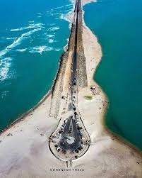
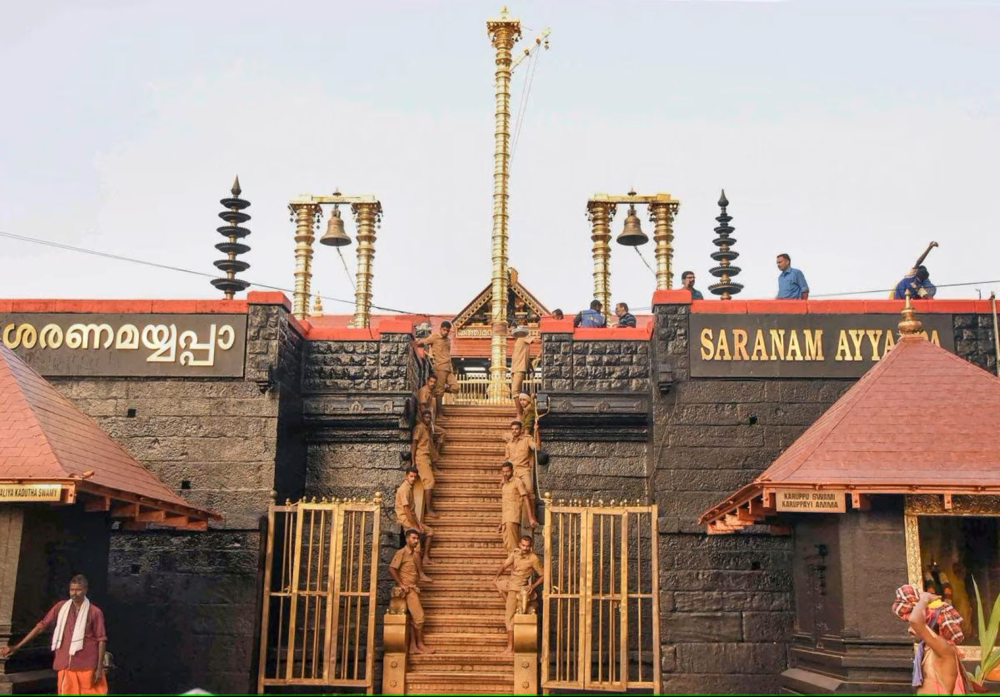
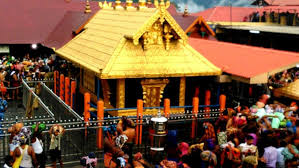

PVM Tourisms
Tirupathi
The Tirupathi is one of the femous visting place
This is a devtional place lord venkateswara is TTD
The control of TTD is our chairman and EO
The present TTD chairman is bhumana karunakar reddy
To visit the place is very beautiful place
The present TTD chairman is bhumana karunakar reddy
To visit the place is very beautiful place
The present TTD chairman is bhumana karunakar reddy
The TTD is very largest and famous temple in Andhra Pradesh
The distict of tirupathi is chitoor
The one of the town in Andhra pradesh
To visting the tirupathi in bus to stop out RTC bus stop
It's airport also avalible for flights in renigunta
To darshan to venkateswara going to tirumala
To route of tirumala is bus and walk route alipiri steps and srivari steps
Darshan of venkateswara swamy to various type darshans are avalible
The visiting places of tirumala papavinasanam,Japali teerdam
akasa ganga,silatoranam,srivaripadalu and chakra teerdam
To food also free food sadan avalible on devastanam
All tirumala is free buses are avalible
The prasadam of TTD is Laddu and vada
To route of tirumala is bus and walk route alipiri steps and srivari steps
Darshan of venkateswara swamy to various type darshans are avalible
The visiting places of tirumala papavinasanam,Japali teerdam
akasa ganga,silatoranam,srivaripadalu and chakra teerdam
To food also free food sadan avalible on devastanam
All tirumala is free buses are avalible
The prasadam of TTD is Laddu and vada
Vijayawada
The Vijayawada is one of tourism place in Andhra pradesh
The distict of Vijayawada is krishna and the river also
The lord of Kanakudurgma
The lord of Kanakudurgma after darshan to visting places is more
After darshan to visit the gunadala meri matha temple it's a charch
To distance is temple to church upto 5km
After church to visit the Bhavani highland
The Bhavani highland is so beautiful parks and games in Vijayawada
To visit the place is go to boating in krishna river
To enjoy ed a lot of this park
And one more visiting place in Vijayawada that is manasa sarovar water park
More water games in that park full enjoyment
After church to visit the Bhavani highland
The Bhavani highland is so beautiful parks and games in Vijayawada
To visit the place is go to boating in krishna river
To enjoy ed a lot of this park
And one more visiting place in Vijayawada that is manasa sarovar water park
More water games in that park full enjoyment
To eat a food in Vijayawada sri anjaneya restarent in Bhavani puram tasty food and reasonble cost
To travel in 15km to visit a highland near Vijayawada
The cost of entrance is 800Rs three games are free of cost any three games
More enjoyment in highland full water games and normal games in highland
Srisailam
The Srisailam is a one of the devtional place in Andhra pradesh
It is a one of the most popular lord shiva temple
And one of sakthi petam also
It is a distict of kurnool in Andhra pradesh
It is a most dangeries forest in Andhra pradesh Nalla malla forest
To entrance the Srisailam to see the sakshi ganapathi temple to darshan the sakshi ganapathi temple
Lord shiva temple is very powerful of the temple
The name devastanam is Mallikarjuna and bramarambika in devastanams
After to choose the darshan to eat a food in devastanam food sadan
To stay the Srisailam more lodges and sadan's are avalible
After darshan too see the side sings of Srisailam
All Srisailam more parks in the town differt type of parks in Srisailam
To see the rouf in Srisailam entrance cost is perhead chaild is 50Rs and elder is 80Rs
To see the the Pathalaganga river and to ride the boating also
And to see the Srisailam dam also
To see the place is chenchu lakshmi museam it's fentastic museam
To see the one of the place also paladhara and panchadhara
And to see the akkamahadevi caves also it's nice caves in Srisailam
last and beautiful place is octopus view ponit
Lord shiva temple is very powerful of the temple
The name devastanam is Mallikarjuna and bramarambika in devastanams
After to choose the darshan to eat a food in devastanam food sadan
To stay the Srisailam more lodges and sadan's are avalible
After darshan too see the side sings of Srisailam
All Srisailam more parks in the town differt type of parks in Srisailam
Vellore
This is a one of town in Tamilnadu
It is a most developed town in Tamilnadu
To see the place is Sripuram golden temple
The golden temple is very beautiful temple in Vellore
The temple to differt types of darshans in our timeing
Free darshan temple is avalible to time is 8am to 12pm and 7pm to 8pm
And 1pm to 6pm only special darshan is avalible the cost of special darshan is 150Rs
The Golden temple view is the star view of temple
The Golden temple special is 70kg silavar lord ganapathi
And 150kg golden lord maha lakshmi it's nice temple in vellore
The night view of temple is very beautiful
Near 15km is to see the amaradhi mini zoo logical park
The cost of entrance is perhead chaild is free of cost and helder is 25Rs
It's a mini zoo logical park and games also avalible
The lot of enjoyment in the zoo
And one more place in vellore is palamathi hills it's nice hills in vellore free of cost
One more park is periyar park is very nice full nature is beautiful of park
And vellore fort is also avalible
And more temples are avalible in vellore
The city buses is avalible for transports
li>And 1pm to 6pm only special darshan is avalible the cost of special darshan is 150Rs
The Golden temple view is the star view of temple
The Golden temple special is 70kg silavar lord ganapathi
And 150kg golden lord maha lakshmi it's nice temple in vellore
The night view of temple is very beautiful
Near 15km is to see the amaradhi mini zoo logical park
The cost of entrance is perhead chaild is free of cost and helder is 25Rs
Tiruvanamalai
This is the town in Tamilnadu
It is a one of the Most popular lord shiva temple
The agni lingam of lord shiva
The history of Arunachalam temple is boasts a captivating history
That spans centuries,holding immense significance in hindu mythology
And atracting of devtoeis is from far and wide
and car or auto is avalible time period is 2hrs
To go the Arunachaleswar giri pradakshan is more temples is on route
The templs's origins can be traced back to the 7th century
The temple gali gopuram is the 8 gopurams on temple first we darshan subramanya swami temple
And we go to Arunachaleswar temple and next to parvsthi devi temple
And The most popular in Arunachalam giri pradikshan
The total distance of giri pradakshan is 14km
The time period of giri pradakshin is by walk is 5hrs to 6hrs
It's a mini zoo logical park and games also avalible
The lot of enjoyment in the zoo
And one more place in vellore is palamathi hills it's nice hills in vellore free of cost
One more park is periyar park is very nice full nature is beautiful of park
And vellore fort is also avalible
And more temples are avalible in vellore
The city buses is avalible for transports
The 9 differt types of lord shiva temples on giri pradakshan
The mobiles are avalible on Arunachaleswar temple
And to place are near Tiruvanamalai is virupaksha caves and satanur reservior
Javadhu hills and to visit more ashramams in Tiruvanamalai
And atracting of devtoeis is from far and wide
The templs's origins can be traced back to the 7th century
The temple gali gopuram is the 8 gopurams on temple first we darshan subramanya swami temple
And after darshan the prasadam is laddu and janthikalu and arisalu
Pondicherry
This is city of india
This city is a under union territory
The Pondicherry is most popular city in Tamilnadu
It is a very beautiful place of tourisms
The roch beach is so beautiful location of Pondicherry
The most beautiful place in Pondicherry is french colony to visit the building is so beautiful
And the boating on beach is so supar there the 4 locations of beach
The cost of boating is perhead 400Rs
To visit the locations is urban port and movie shooting spart
And mangrove forest , oshion ride upto 5km the beautiful place mangrove
After the boating is to go est a food the famous restarent
The eden beach is near 2km and the josaph francols duplex statue
The fentastic place aurovelli on mantra mandir
To visting a mantra mandir park the car to walk a 1.5km
The route is more measumes and shops are avalible
Return to mantra mandir to car parking free bus is avalible
To visit the live arting in french colony per person to visit measuam 290Rs
And to visit Raj nivas and white town also
To visiting in Pondicherry one more place is arulmigu manakula vinayagar temple
And the visit an the basilica of the sacred a heart of jesus
And to visit a botanical garden
And the boating on beach is so supar there the 4 locations of beach
The cost of boating is perhead 400Rs
To visit the locations is urban port and movie shooting spart
And mangrove forest , oshion ride upto 5km the beautiful place mangrove
After the boating is to go est a food the famous restarent
The eden beach is near 2km and the josaph francols duplex statue
The fentastic place aurovelli on mantra mandir
Rameswaram
This is also one of the twon in Tamilnadu
It is island One of the lord shiva temple
This sea is a not avalible of waves
The lord ram is to going on lanka is starting point on Rameswaram
The avalible of ramasetu is still to see the ramasetu
That place is called on danushkoti
The rameswaram special is to lord of ram to prathishtinchina siva lingam
Is most popular south india most powerful temple
To went to the darshan is early morning 4am is spatika linga darshan upto 5am
The early morning 6am to start the free darshan and special darshan
And the temple very historcal temple old temple but very bug temple
The rameswaram temple is an 22 bavis snanam is very useful
To the brokar is to adopt in the temple to spend the money all the bavis snanam is avalible
To after darshan is more visable places in rameswaram
To see the Dr.A.P.J.Abdul kalam house and memorial place
After to visit the pambam=n bridge
After to visit the villoondi theerthem in rameswaram
and one more place is agni theerdam beach is near temple
And to visiting places is danushkoti and ram sethu beach

The rameswaram shopping is very less costs
To purchese the swetters and blankets very less cost
Any item to purchese very less cost of the shoppings because all are imports
The rocks are the rameswaram don't drowning all rocks are to float
The power of ram sethu
Kanyakumari
The Kanyakumari is one of the town in Tamilnadu
It is a tourism place
The india's last place
The Kanyakumari is combined a 3 oshions indian oshion
And bangalakatham and arebian oshion
The Kanyakumari is a one of the best tourism place
The small temple of Kanyakumari devi
To see the vivekananda memorial is on sea
To went the vivekananda memorial is to going on boating upto 3km
The cost of boating is per person 100Rs
To see the vivekananda memorial is excelent place
The vivekananda is to meditation is on this memorial place
To see the any side only to see a oshion
And too see the urban of beach
To the shopping of any item to chid like blankets
The cloths and any chanins,bags and nuts are very less cost
All places or visit the one more palce is measuam
Tato is also less cost in Kanyakumari
To purchese the masala items also less cost of amount
And the quality of item is avalible
All Parking places are no money free of cost parking
Sabarimala
It is an town in kerala
The lord ayyappas temle
They beautiful place of kerala and gaut road
The sabarimala ayyppa temple is avalible on only 3 months of time
There the temple is monthly one time will open
Teh avalible on temple is karthika masam
There the temple atracts in makara jyothi on jan 14th


The more people will come sabarimala on makara jyothi
The start to erumeli ayyappa temple and vavaru swami masjid
The process of sabarimala yatra is to car or bus is park the Nelicol
To went to Nelicol to pamba is using on KSRTC buses
on pamba you freshuo on pamba river
To visit a pamba ganapathi temple
And we start to walk in 7km of temple
The two routes are steps and tractor road
To walk the 15 shelters of steps to reach very heavy road
and after 15 shelter are very easy route upto walk on 3km
After to reach a temple goto ayyappa swami darshan
We see after ayyappa swami temple and malikapurothama temple
There allow the mobiles on darshan
And to visit the sree mahadev temple in Nelicaul
The prasadam of sabarimala aravana payasam
Guruvayavur
This is the one of town in kerala
The lord of krishna temple in Guruvayavur
To visit the place is very nice and beautiful temple
The night view of temple is beautiful
To went to temple is my prefer of night
Near temple so Many washrooms and fresh up rooms are avalible
The mobiles are not allowed in temple
The mobiles counters ara avalible temple sourindings
Lord krishna temple is very popular in Guruvayavur
The going to temple to were thw cultural dresses
Gents is to were the white pancha without shirt to going darshan
Ladies are to were the saree going temple
To not a follw the above rules don't allow to the darshan
The Guruvayavur coconet is oil is very famous
To cook a food oil also coconet oil
The coconet oil is very quality oil of kerala
The price is also very high cost oils 1ltr 250 to 290
Near Guruvayavur temple holesale oil store is avalible
The cost of oil 1ltr is 210 is fixed rate to purchese the oil you can goto that store
The night view of temple is very beautiful
Because the all lighting are oil lightings
The lord of krishna is on temple every day night to conduct a bajana and kerala drums music
The town of Guruvayavur is avalible of buses and trains
Tiruvananthapuram
This is the town in kerala
This is an captal of kerala state
The temple is lord of padmanaba swami
When the temple is under control central government
The More security and high security of temple
Under control all central government security ARMY and CRPFs
The temple is very powerful temple
The darshan of lord is timeings are follow
4am to 5am || 7am to 8am || 10am to 11am || 1pm to 2pm || 4pm to 5pm || 7pm to 8pm
The above timeings are to follow the temple after 8pm to close the temple
And you can only 1hr to stay the temple and next 1hr to all the check the temple of CRPF persons
The mobiles are not allowed if you have mobile free mobile counters are avalible near temple
If you went temple to were the cultural dresses
Gents are pancha without shirt and ladies are sarees
The history of temple is 7rooms in temple
The temple is 6rooms are opened on temple
The opened rooms is to see a more gold and more money
And more old vigrahams sencharies of vigrahams
This temple is starting to control Rajula family
After we control is handover the central government
The 7th room is not open because it's nagabandan
So the very high gold and costly temple of in india
Total the temple property is lakhs of crows
Because thet temple is very high security